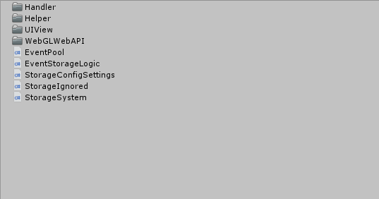
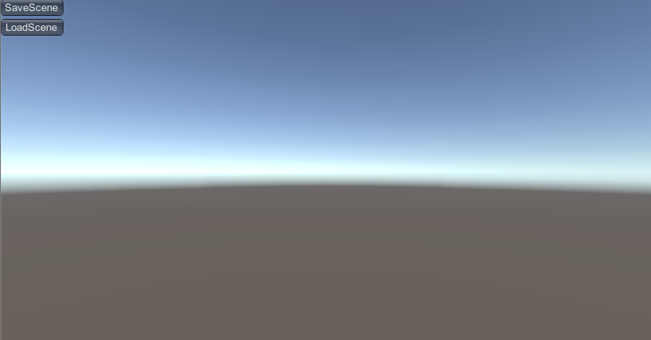
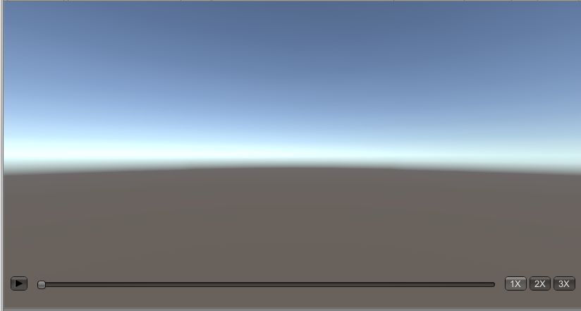
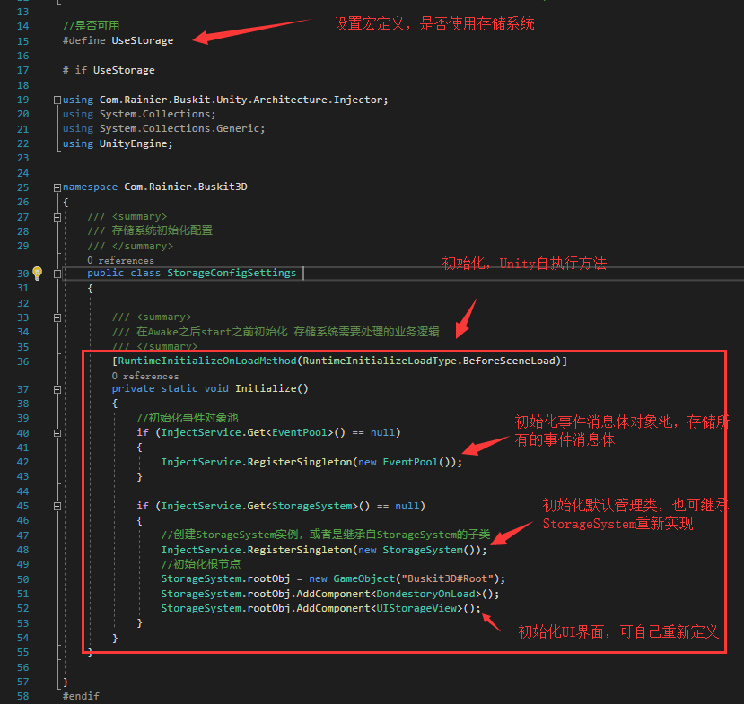
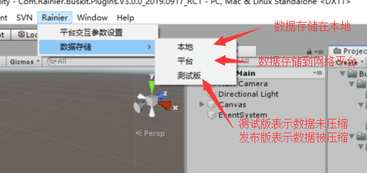
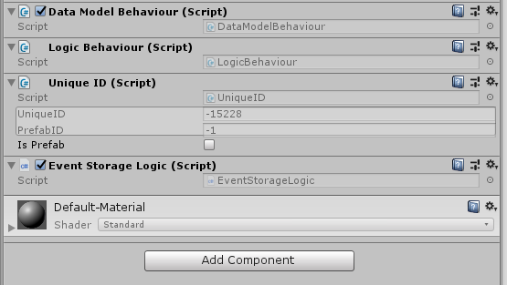
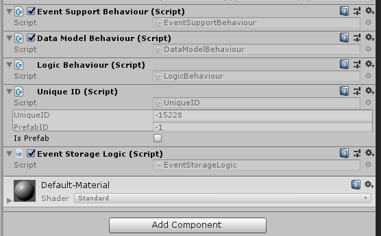

内容概要
StorageSystem插件，是基于BVRP3.0基础框架而开发的，实现了对属性变化以及方法调用 产生的事件消息体的记录、序列化、反序列化。通过对已记录事件的广播，从而达到实验的回放功能。
文件结构及内容

Handler文件夹
包含3个业务逻辑处理类：
LocalDataHandler：将序列化后的事件消息体保存到本地（Pc、WebGL）
NetDataHandler：将序列化后的事件消息体保存到网络服务器上（需要定义URL和对应的请求参数）
VideoHandler：录像回放的播放器，将反序列化后的事件消息体，按照帧顺序逐一广播。
Hepler文件夹
主要包含录像功能的几个辅助性功能类：
ScreenMask：用于上传，存储数据等待过程中的UI遮罩
UIAnchorUtility：通过代码设置UGUI的Anchor锚点
ZipUtility：提供常用的压缩、解压缩API
UIView文件夹
包含录像回放用到UI功能类:
UIEventSupportView:作为基类使用，主要用于UI的事件源基类
UIStorageView：提供实验中产生的数据保存以及加载的UI界面

UIReplayView：录像回放中的UI界面

WebGLWebAPI文件夹
包含一个接口以及jslib接口的包装类：
IWebGlWebAPIService：定义jslib接口中实现的方法
WebGLWebAPIServiceWapper：实现对jslib中的方法调用。主要包含在WebGL上打印日志，存储文本到本地以及从本地读取文本
EventPool
事件消息体对象池，用于存储在整个软件生命周期中，所产生的每个事件消息体，默认情况包括属性事件和方法事件
EventStorageLogic
存储事件消息的业务逻辑，包含对事件消息体的存储，以及对事件消息体的过滤
StorageConfigSettings
存储系统的配置脚本，用于初始化存储系统，可设置是否使用存储系统，或者使用扩展的存储系统
StorageIgnored
特性标签，用于过滤事件消息体
StorageSystem
默认的存储系统管理类，提供事件消息体的序列化还反序列化、数据的保存和加载以及录像回放的初始化，可继承重写部分逻
存储系统应用
整个存储系统应用比较简单，给定几个简单的设置，挂载对应的事件消息体记录脚本，即可。前提是整个软件的编程环境是基于BVRP3.0的事件系统来完成的。
简单配置
- 修改存储系统配置脚本(StorageConfigSetting),如下图

- 数据存储配置

事件记录
事件记录默认只需要将EventStorageLogic脚本挂载到带有DataModelBehaviour的GameObject上即可。如果要实现回放，每个带有DataModelBehaviour的GameObject也必须挂载UniqueID脚本。
实体是继承自Entity的事件记录
EventStorageLogic也是继承自LogicBehaviour的，凡是有实体数据变化或方法调用的事件，都会有由DataModelBeahviour接收到，并路由到所有已挂载的LogicBehaviour上

实体是继承自EventSupportBehaviour的事件记录
这种情况下 实体即EventSupprotBehaviour，也会由DataModelBehaviour来接收由EventSupprotBehaviour发出的属性变化和方法调用事件，路由到LogicBehaviour。
特别说明：在这种情况下，如果业务逻辑都是在EventSupportBehaviour中处理的，则就不需要挂载LogicBehaviour，只挂载EventStorageLogic记录事件即可

自定义扩展
必要条件：
如果要使用自定义的数据存储以及UI，首先需要继承StorageSystem，参考父类重写相关的虚函数。
在StorageConfigSettings配置脚本中，实例化对应的子类。
自定义类型
- 数据存储
参考对应的NetDataHandler或者LocalDataHandler，编写对应的数据持久化内容。在继承自StorageSystem的子类中实例化，并使用。
- UI
继承UIEventSupprotView，编写对应的保存、加载UI（在配置脚本中实例化），以及播放器UI。在继承自StorageSystem的子类中实例化。
- 播放器
参考ViedoHandler，处理EventPool中的事件消息队列。在继承自StorageSystem的子类中实例化。
注意事项
在实现录像回放时，可以采用比较简单的方式，比如记录所有的方法调用事件，需要注意参数的类型是否支持序列化。
对于动态生成物体，需要在编辑器状态下勾选上UniqueID的IsPrefab选项